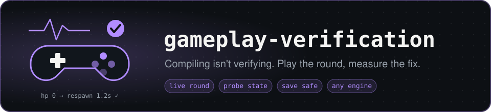

gameplay-verification

Verify a gameplay fix by driving a live round into the failing state and measuring the change, not by reasoning that it compiles.
Pins a reproduction first, then fixes, then re-runs the same probe to show it moved.
Protects the player's save and any live setting another session is editing.
Ends with a report of what was and was not exercised.
Quick start
Copy the folder into your harness: install a skill.
Write an engine add-on and a game add-on in
addons/besideSKILL.md(templates inINSTALL.md).Before you report a fix, ask the agent:
Before reporting this gameplay fix, read gameplay-verification/SKILL.md and its add-ons, then drive a live round and show the measurement changed.
What's inside
This skill ships no scripts and has no dependencies.
| Script / file | What it does |
|---|---|
SKILL.md | The rules the agent follows, engine-agnostic |
INSTALL.md | Install steps and the two add-on templates |
addons/<engine>.addon.md | You write it: how to run probes in your engine |
addons/<game>.addon.md | You write it: how to reach and measure a round of your game |
How it works
The base rules know no engine and no game. They tell the agent what to check.
Your add-ons tell it how to reach that in your project. The agent reads the base, then the engine add-on, then the game add-on. The later file wins on conflict.
What the rules cover
Reach a real round, and name what a scripted shortcut skips.
Protect the save before probing.
Probe state and call the code under test directly.
Measure on screen before believing a diagnosis.
Combat and actors: pin the player, re-resolve targets, disclose every pin.
State is not a screenshot: say "verified by state, not seen".
Shared editor or live tree: ask peers first, restore by path.
Leave it as you found it, and report.
Add-ons
Engine add-on: probe channel, play that keeps ticking, frame hooks, input injection, rendering traps.
Game add-on: start a round, the "playing" flag, mode, save location and live settings, event bus and HUD.
Each add-on records only the delta and cites
SKILL.mdfor the rest.
Safety
A half-booted session holds defaults. Compare saved values in memory against disk before any probe that may write.
Take a fresh save backup per session.
Never restore live settings another session may edit. Diff first and copy back only what you changed.
Nothing is installed beyond the folder.
Platform and harnesses
Any engine, any OS. No scripts, no dependencies.
Claude Code, Codex, opencode, or any harness with a pointer to
SKILL.mdin its always-loaded rules.
Limits
It cannot reach your engine or game without add-ons.
A scripted round may draw nothing: state readings are not evidence of what is on screen.
It pairs with a device-driving skill (for example
device-testing) when the round has to run on a phone.
Files
SKILL.md: what the agent readsINSTALL.md: full install and uninstall
Part of agnostic-skills · MIT